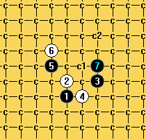

残月一个6求思路
首页
五子棋交流
#1 残月一个6求思路 作者：可可的棋 发表时间：2013-3-24 23:00:05
这个6黑能杀吗，求思路
#2 Re:残月一个6求思路 作者：屏蔽 发表时间：2013-3-25 0:31:15
7之后8唯一 这样走我觉得赢面还是比较大的 不知道有没有轻松一点的9
#3 Re:残月一个6求思路 作者：山城刀客 发表时间：2013-3-25 1:49:43

这个7可以。
 残月必败6.rar
残月必败6.rar
#4 Re:残月一个6求思路 作者：屏蔽 发表时间：2013-3-25 8:51:11
 我一看LZ来发问题我都懒得拆这个7了……
我一看LZ来发问题我都懒得拆这个7了……
#5 Re:残月一个6求思路 作者：自来水 发表时间：2013-3-25 13:06:01
大概会这样， 越来越懒了
越来越懒了
#6 Re:残月一个6求思路 作者：可可的棋 发表时间：2013-3-25 18:02:45
谢谢各位高手的指教，谢谢刀客的无私奉献。